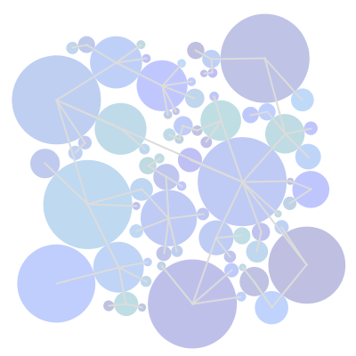
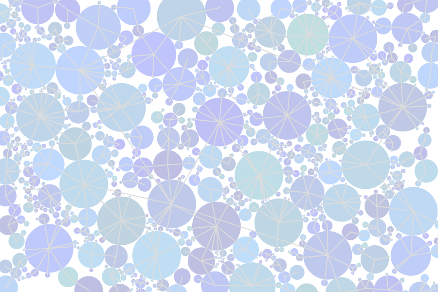
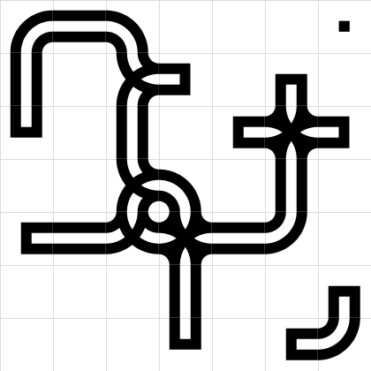
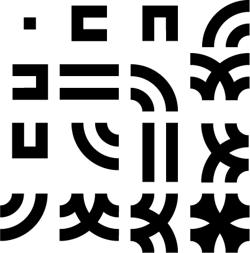
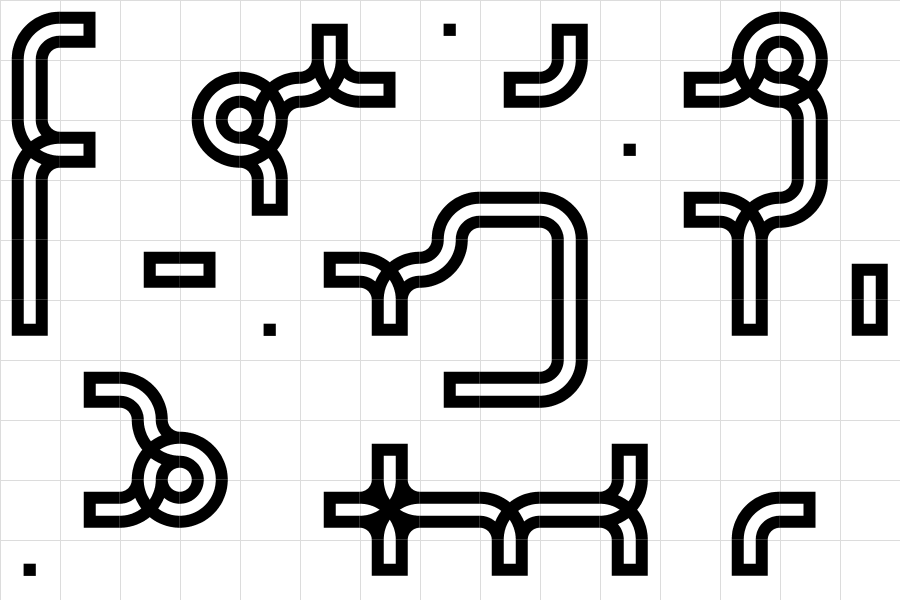

Space Filling - Concept

Take a look at this image. Notice how each circle takes up space without overlapping?
They also know who their closest neighbor is and draw a line to them.
The main idea here is to make "smart" decisions, before randomly placing objects on the screen. Let's take a look at how
we do this:
Steps
First we need a plan to find out how this is going to work, so let's make some steps:
- Make a new Circle object
- Place it randomly with radius 1
- Check if it overlaps with any other
- If it does we won't do anything
- If it does not continue
- Find the closest neighbor to the new circle
- Keep setting the radius until we can't find a smaller one (best fit)
- Add the circle to the list
There are two important steps in this guide: detecting an intersection, and finding the closest neighbor.
Detecting an Intersection:
Here it's a simple collision detection, is the distance between these two circle
objects less than the sum of their radii?
Finding the Closest Neighbor:
In this method, we're taking a look to see if the radius of our new circle it too big to fit next to the
other circle we're currently checking. If it is, we will set the radius of the new circle to be exactly
the distance between them minus the other circle's radius. We'll also update the neighbor field to the id of the
other circle. This loop will keep going until the closest fit is found.
This is actually an example of a classic problem in programming, finding the minimum value that will work.
Each step in the loop, the radius of the new circle might get smaller and smaller, until finally, after checking
all the other circles, it can't possibly be any smaller, so it must be fitting perfectly to the last circle that
it was checked with. This is now the new circle's neighbor.
Result

Sometimes it can be important to make some decisions before adding new objects to a design or game.
There's many ways to calculate optimal positioning, closest distance is just one.
Smart Grids - Concept

Take a look at this grid? There's a special relationship between each cell containing a shape.
The relationship is calculated using a formula to decide which piece should be at which tile.
The formula is based on a binary number that is constructed from the east, south, west, and north
neighbors of the current tile. If a neighbor is on, it has a value of '1', if it is off it has a value of '0'.
The binary number is laid out like this: north + west + south + east.
Which constructs a number something like 1101.
Converting this number to a decimal will give us the index of the shape in the list of grid shapes that
we need for this specific tile.
So it's simply a clever way to encode and organize shapes based on the information of neighboring tiles.
The formula can easily be constructed and the correct shape is always selected.
Steps
Let's take a look at the plan:
- Build a grid of objects
- Allow objects to be turned on (value = 1)
- Loop over entire grid and decide on shape:
- Find east, south, west, north neighbor values
- Put them in a string: north + west + south + east
- Convert this number to a decimal number
- Use number as shape index to select correct shape from shapes array
- Draw shapes
There is one crucial step here:
Calculating the formula:
The binaryResult is passed the the draw module method of the shape which handles converting it to a decimal.
Once it's in decimal form, it's a number between 0 and 15 since it has 4 binary digits.
This is because, each digit represents a choice between 0 and 1, which is a bit of information.
Since we have 4 bits of information, we can make 4 choices of 0 and 1. (4 choices of 2 choices)
That means: 2 x 2 x 2 x 2 = 16, or 2^4, or 0-15 total possibilities.

Now we choose our shape from these shapes using the decimal number as an index into the array.
Shapes are 0-15 left to right, top to bottom.
Result

Information about surrounding objects can be valuable in determining visual appearance.
There are many formulas and techniques that can be created for this type of challenge.